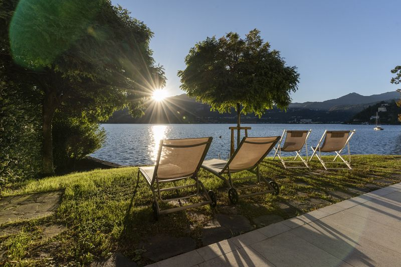
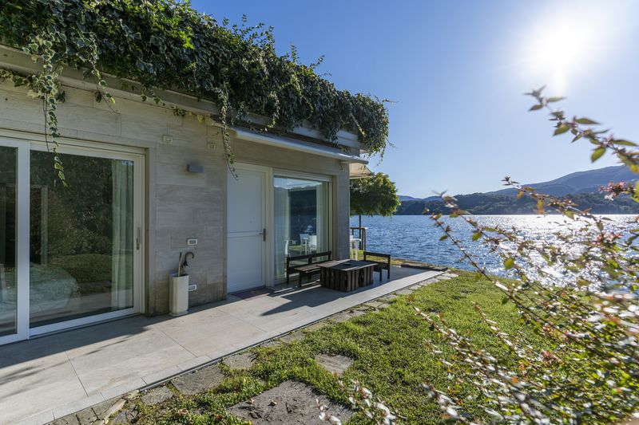
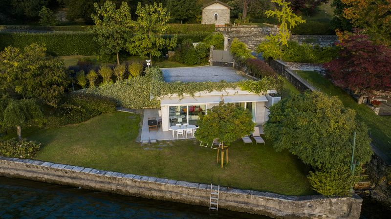

Tout ce qu'il vous faut, du côté ensoleillé du lac d'Orta. À trois mètres d'une eau cristalline.

Là où la lumière du matin rencontre l'eau. Votre plage privée, à quelques pas.

Un espace privé pour lire, se reposer et regarder la lumière changer sur l'eau.

Peut-être le plus bel emplacement de parking au monde. Spacieux et juste au-dessus de la villa.
Nichée sur la pittoresque rive est du lac d'Orta, la Villa Volpe est un logement véritablement unique. La villa, un cube de verre design entouré d'un jardin paysager à couper le souffle, se trouve à seulement trois mètres des eaux cristallines du lac, avec vue sur l'île de San Giulio illuminée la nuit.
65 mètres carrés d'espace de vie magnifiquement aménagé. Deux chambres avec lit king-size. Une cuisine entièrement équipée. Et dehors, votre oasis privée : un jardin luxuriant qui mène à votre propre plage.
Idéalement situé à 80 km de Milan, 45 km de l'aéroport de Milan-Malpensa et 120 km de Turin. Via Novara 38, Orta San Giulio 28016, Italie.